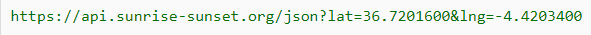

API Parameters
Refer to the link: https://sunrise-sunset.org/api
In javascript or normal browser, when we want to apply some parameters to the endpoint of an api, we could specify it specifically by adding ? to the url then applying the parameters separated by & such as

In python, we could specify the parameters inside the code by creating a dictionary then inserting it to the second parameter of the get request method

Without the parameters, this will raise an exception, namely bad request error 400.